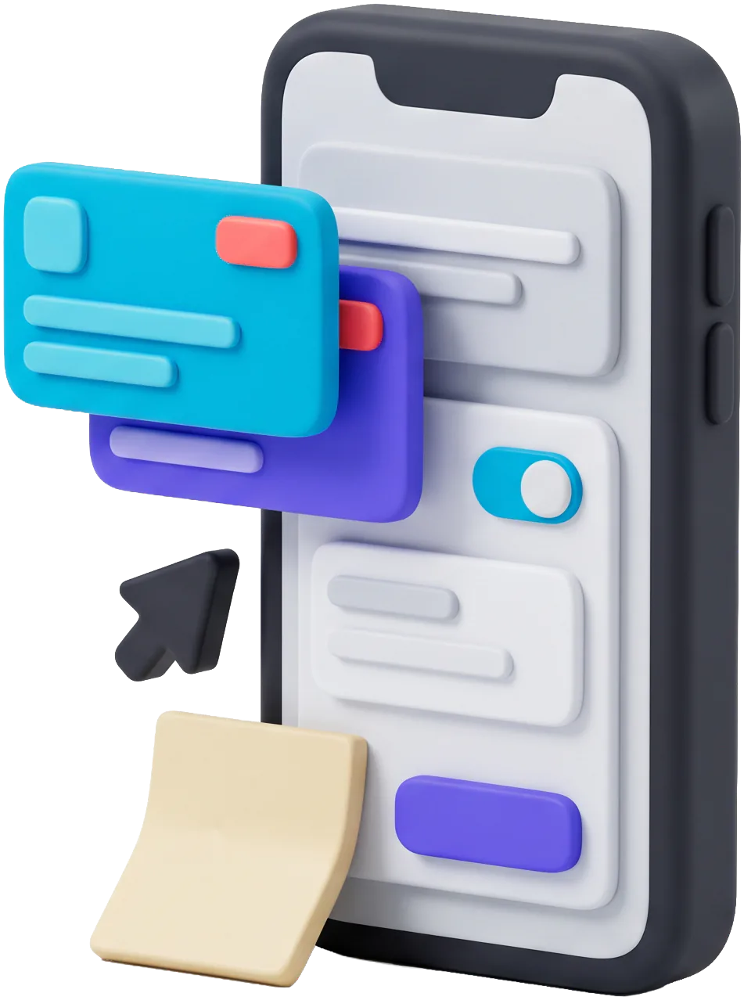
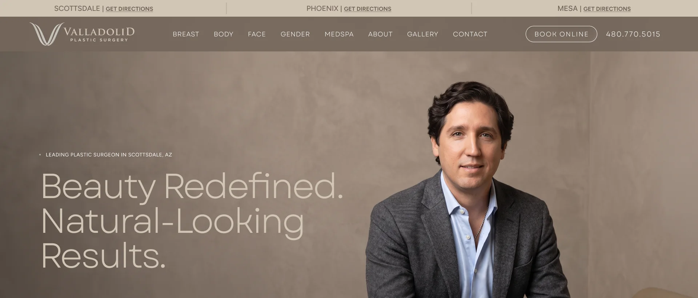
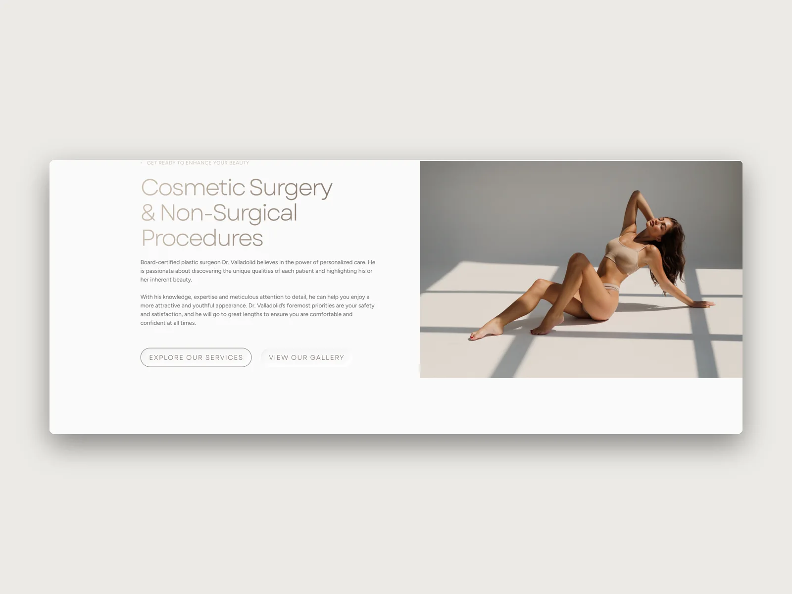
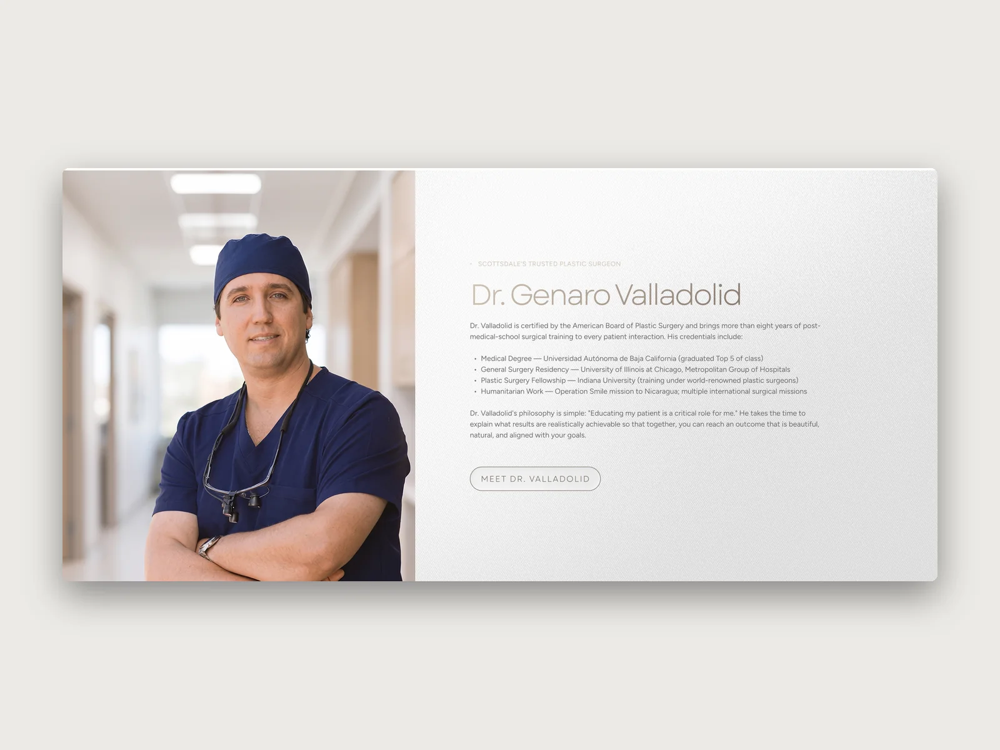
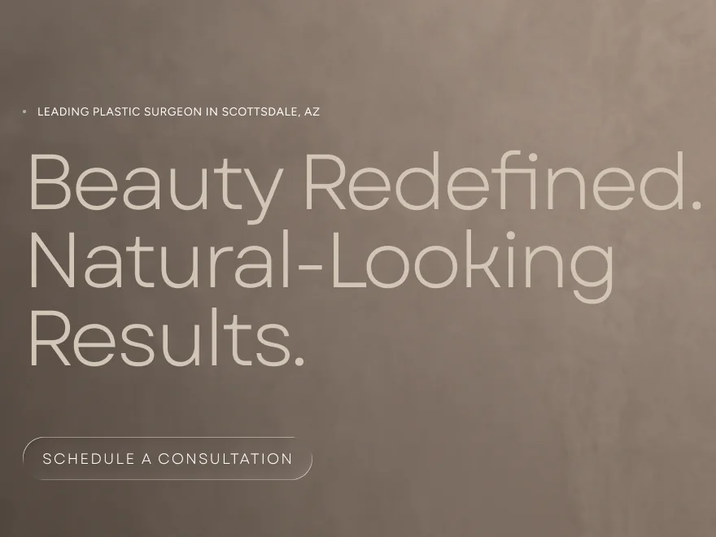
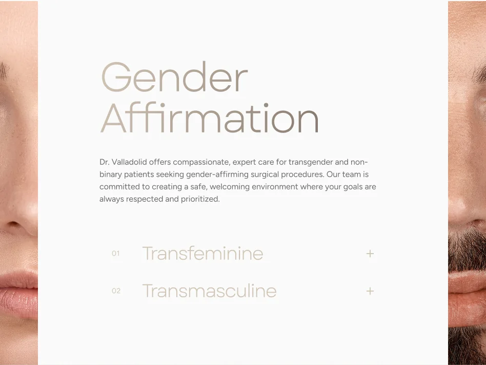
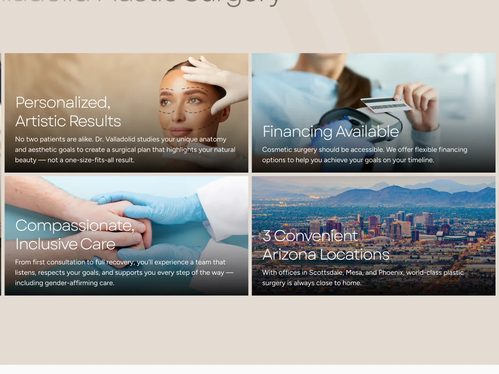
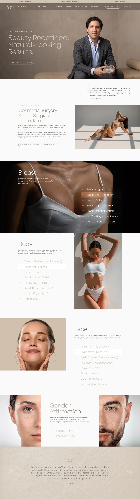
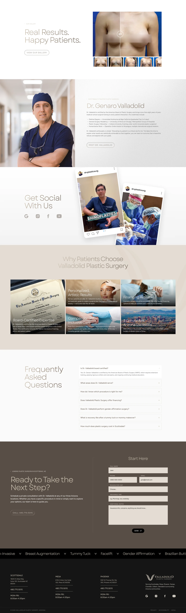

UI/UX Design
Valladolid
Plastic Surgery
A website redesign for a board-certified plastic surgeon with three offices across Arizona.
↳ About the project
Beauty, redefined
in a quiet palette
Valladolid Plastic Surgery is led by board-certified plastic surgeon Dr. Genaro Valladolid, with offices in Scottsdale, Phoenix and Mesa. The redesign uses warm taupes, light type and generous space so the site feels as calm and considered as a consultation.
Procedures are organized by area (breast, body, face and gender affirmation), each with its own numbered menu, followed by results, the surgeon’s credentials, social proof, an FAQ and a booking form.






↳ The website
The homepage,
end to end


Other cases you might like
Ready to start a new project?
↳ Get in touch